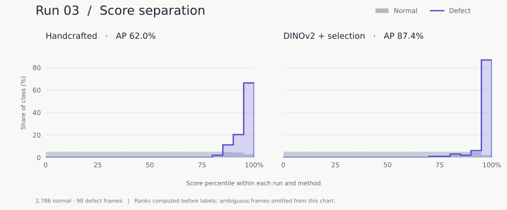

시간 순서의 이미지
촬영된 직물 사진을
순서대로 살펴봅니다.
SURFACETRACE · RECORDED RESULTS
OVERVIEW
시간 순서로 들어오는 직물 사진에서
이상 위치와 외관 변화를 각각 분석합니다.
촬영된 직물 사진을
순서대로 살펴봅니다.
한 장 안에서
기준과 다른 위치를 찾습니다.


여러 장에 걸친
전체 모습의 변화를 봅니다.
 →
→
점수와 변화 신호를 모아
확인할 사진을 제시합니다.

우선 2건 확인 후
필요하면 총 8건까지.
ORIGINAL SURFACETRACE
사진의 특징을 추출하고,
기준을 선별해 변화와 이상을 확인합니다.

사진별 이상 분석과 구간 외관 변화는 독립적으로 진행됩니다.확인한 정상 특징은 기준 후보 평가로 이어집니다.
DATA & REFERENCE
TSFabrics의 시간 순서 사진을 사용합니다. DINOv2의 가중치는 고정하고, 초기 사진에서 비교할 특징을 선별합니다.
DINOv2를 새로 학습하는 과정이 아닙니다.
비교 기준인 특징 모음을 구성합니다.
Frozen DINOv2 ViT-S/14 · 입력 448×364
기준과의 거리가 큰 패치가 이상 위치로 표시됩니다.

초기 사진을 선별하고 사진당 24개 특징을 저장합니다.
이후 1,536장의 점수로 경보선 0.47077을 보정했습니다.
기준 특징의 세 번째 최근접 코사인 거리로 패치 점수를 계산합니다. 상위 9개 패치 점수의 평균을 사진 점수로 사용하며, 경보선은 보정 점수의 99.5백분위수입니다.
DESIGN CHOICES · 데이터와 기준
기준 구축, 방법 비교, 평가용 녹화를 나눴습니다. 최종 평가는 남은 16개 녹화의 지정된 구간에서 진행했습니다.
결함 라벨이 적은 상황에서 사진을 비교하기 위해 사전학습 특징을 사용했습니다. 모델 가중치는 고정하고 기준 특징을 구성했습니다.
초기 512장을 외관별로 나누고, 각 그룹에서 덜 이례적인 사진을 골랐습니다. 선택한 308장에서 기준 특징 7,392개를 구성했습니다.
FOUNDATION FEATURES
같은 사진에서 수작업 특징과 DINOv2 + 기준 선별을 비교합니다. 붉은 부분은 기준과 차이가 큰 위치입니다.
점수 —
점수 —
ALERT LIMIT · 경보선 후보 비교
기준 녹화의 보정 사진 1,536장으로 경보선을 정했습니다. 이후 더 낮은 후보를 시험해 결함 경보와 정상 오경보를 함께 비교했습니다.
후보에서는 결함 경보가 늘었지만 정상 오경보도 크게 늘어 현재 경보선을 유지했습니다.
같은 선별 기준 · 최종 16개 녹화경보선을 낮추는 후보는 미채택
VISUAL SHIFT
사진 한 장의 결함 위치와 별도로, 연속된 사진 묶음의 특징 분포를 비교합니다. 아래 조작으로 실제 사진의 시점을 바꿔 보세요.
128장 묶음 · 32장마다 계산
3회 연속 초과하면 외관 변화 신호
서로 다른 두 녹화를 이어 붙인 시험입니다. 새 녹화 96번째에서 변화 신호가 확인됩니다.
CHANGE SIGNAL · 설계와 검증
한 장의 국소 결함과 별도로 여러 사진의 전체 특징 분포를 비교합니다.
새 사진이 들어올 때 비교 창을 옮겨 변화 점수를 갱신합니다.
한 번 튄 값에 바로 반응하지 않도록 연속된 경보선 초과를 확인합니다.
RECORDED INTERVAL
모든 사진에 이상 점수를 계산합니다. 높은 점수의 사진을 고르되, 같은 사건에 검수가 몰리지 않도록 시간 간격을 둡니다.
상위 순위로 선택된 검수 후보입니다.
경보선 아래의 사진도 포함될 수 있습니다.
먼저 두 장을 확인한 뒤, 추가 여섯 장의 요청 여부가 결정됩니다. 후보를 누르면 검수 단계로 연결됩니다.
REVIEW COVERAGE · 8장 선정 근거
확인할 사진의 상한을 8장으로 두고, 같은 예산 안에서 선정 방식의 효과를 비교했습니다.
점수가 높은 사진만 고르면 가까운 시점에 몰립니다. 최소 간격을 적용해 확인할 위치를 구간 전체로 분산했습니다.
점수 상위 8장 → 간격을 둔 8장
다른 촬영 설정의 결함 녹화 2개: 7 → 12건 발견 · 사후 점검
12와 16은 개발 녹화에서도 모두 20건으로 동률이었습니다. 더 넓은 시간 분산을 유지하는 16을 사용했습니다. 간격 32에서는 가장 짧은 녹화에서 8장을 채우지 못했습니다.
원본 간격 비교 기록 ↗LIMITED REVIEW
사진을 보고 확인 결과를 열면 검수 기록이 쌓입니다. 첫 두 결과에 따라 다음 요청이 달라집니다.
공개 정답을 한 장씩 확인하는 시연입니다.
2건 종료가 구간 전체의 정상 판정은 아닙니다.
REVIEW WORKLOAD · 단계적 검수의 근거
두 결과가 모두 정상이면 종료하고, 결함 또는 불확실한 결과가 있으면 여섯 건을 더 확인하는 규칙입니다.
발견한 신규 사건은 26건 유지
정상 사진 검수 101 → 29장
처음부터 8건을 요청하기 전에 적은 수로 추가 검수 필요성을 확인하는 설계입니다.
| 먼저 확인 | 총 요청 | 발견 사건 |
|---|---|---|
| 1건 후보 | 44건 | 26건 |
| 2건 사용 | 56건 | 26건 |
| 3건 후보 | 68건 | 26건 |
1건 후보는 결함이 있는 구간에서 첫 사진만 정상인 어려운 사례를 검증하지 못해, 기존 2건 규칙을 유지했습니다.
사후 탐색 실험입니다. 조용한 12개 구간에 확인용 검수를 한 건씩 추가했습니다. 늘어난 24개 사건은 모두 하나의 녹화에서 발견됐습니다.
원본 재배분 실험 기록 ↗REFERENCE VALIDATION
검수로 확인한 정상 특징을 기준의 복사본에 추가합니다. 이후 사진에서 오경보와 결함 탐지를 함께 비교합니다.
별도 15개 녹화의 8건 고정 검수 실험입니다.
DINOv2 모델의 가중치는 고정했습니다.
기존 기준검수 기반 후보
오경보는 줄었지만 결함 탐지도 감소했습니다.

이 그림은 초기 512장을 라벨 없이 선별한 별도 후보의 예시입니다. 위의 검수 기반 후보 집계와는 다른 실험입니다.
UPDATE RULE · 후보 적용 기준
기존 기준을 보존하고 복사본에서 후보를 만듭니다. DINOv2 가중치는 고정합니다.
정상 사진에 낸 경보와 실제 결함에 낸 경보를 함께 집계합니다.
후보의 오경보는 줄었지만 실제 결함 경보도 202 → 153장으로 감소해 후보 적용을 보류했습니다.
METHOD COMPARISON · 같은 검수 예산
수작업 특징과 DINOv2 + 기준 선별을 비교했습니다. 두 방식 모두 구간당 8장을 같은 간격 규칙으로 선정했습니다.
수작업 특징 → DINOv2 + 기준 선별
같은 128건 검수 · 최종 16개 녹화
사람이 확인할 후보를 선정한 결과입니다.
결함 포함 4개 녹화의 평균 AP · 2개 녹화에서 우세

COMPONENTS & SPEED · 추가 결과
DINOv2와 기준 특징 수 7,392개를 고정하고, 두 선택을 각각 바꿨습니다.
기준 선별 × 검수 선정 · 최종 16개 녹화
발견한 신규 사건 수 · 구간당 8건 검수| 기준 구성 | 상위 8장 | 간격을 둔 8장 |
|---|---|---|
| 초기 사진 전체 | 8 | 19 |
| 사진 선별 | 15 | 26 |
기록된 추론 처리 속도입니다. 카메라·별도 변화 감지·화면 처리 시간은 제외했습니다.
실제 TSFabrics 사진·저장된 분석 결과 재생 · CC BY 4.0 원본 시연 보기 ↗